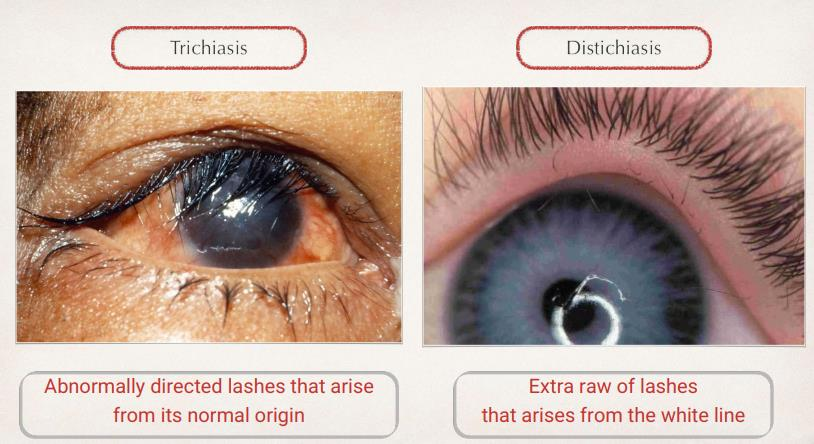

Part I · Mal-directed lashes
Causes and clinical picture
Causes of acquired mal-directed lashes
Any cicatrizing disease affecting the lid margin:
- Trachoma (the commonest cause in Egypt).
- Ulcerative blepharitis.
- Trauma and chemical burns.
- Cicatrizing diseases: ocular cicatricial pemphigoid and Stevens Johnson disease.
Clinical picture
- Symptoms: foreign body sensation, pain, lacrimation, photophobia and conjunctival hyperemia.
- Signs: blepharospasm; misdirected lashes with or without entropion; conjunctival hyperemia with or without discharge; corneal vascularization in long-standing cases due to prolonged corneal irritation.
